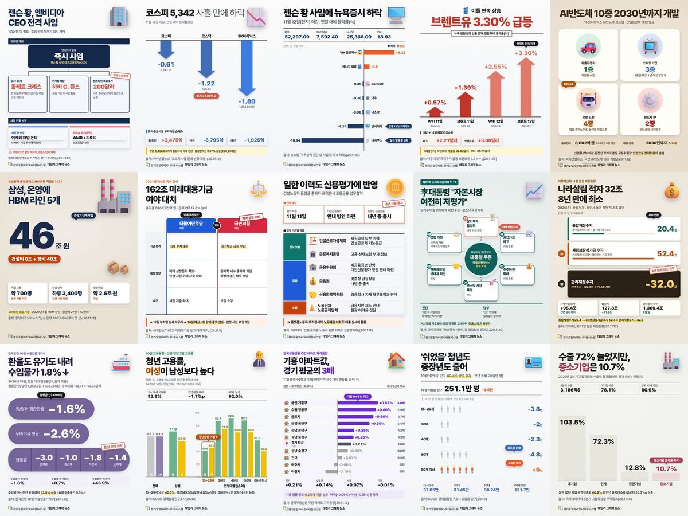

11.13.(금) 데일리 그래픽뉴스
오늘의 일자리·경제 뉴스·통계 15건

- 01젠슨 황, 엔비디아 CEO 전격 사임파이낸셜뉴스 「젠슨 황 전격 사임」(26.11.12)
- 02코스피 5,342.73, 사흘 만에 하락파이낸셜뉴스 「코스피 사흘 만에 반등 제동」(26.11.12)
- 03젠슨 황 사임에 뉴욕증시 하락, 엔비디아 4.34%↓뉴스핌 「뉴욕증시 젠슨 황 사임 충격 속 하락」(26.11.13)
- 04국제유가 이틀 연속 상승, 브렌트유 95.82달러이투데이 「국제유가 급등 브렌트유 3.3%↑」(26.11.13)
- 05국산 AI반도체 10종 2030년까지 개발(8,002억 원)파이낸셜뉴스 「국산 AI반도체 10종 개발」(26.11.12)
- 06삼성 온양 46조 HBM 투자, 직접 고용 약 700명중앙이코노미뉴스 「삼성 온양 46조 HBM 투자 첫 삽」(26.11.12)
- 07162조 미래대응기금 놓고 여야 대치세계일보 「162조 미래대기금 놓고 여야 대치」(26.11.9)
- 08건설·플랫폼 노동자 일한 이력도 신용평가에 반영이투데이 「건설 플랫폼 노동자 일한 이력도 신용평가에」(26.11.11)
- 09李대통령 "자본시장 여전히 저평가", 장기투자 대책 주문아시아경제 「李대통령 자본시장 일희일비 말아야」(26.11.12)
- 101~9월 나라살림 적자 32조, 8년 만에 최소기획예산처 11월 월간 재정동향(26.11.12)
- 11환율·유가 내려 10월 수입물가 1.8%↓한국은행 10월 수출입물가지수(26.11.13)
- 12청년(15~29세) 고용률, 여성이 남성보다 높다KOSIS 경제활동인구조사(26.10)
- 13경기 아파트값 0.21%↑, 기흥은 경기 평균의 3배한국부동산원 주간 아파트 가격동향(26.11.12)
- 14'쉬었음' 인구 251.1만 명, 60세 이상만 증가KOSIS 경제활동인구조사 쉬었음 인구(26.10)
- 153분기 수출 72.3%↑, 중소기업은 10.7%국가데이터처 3분기 기업특성별 무역통계(26.11.10)
경기도 31개 시군 일자리 통계는 경기도일자리모니터링시스템에서 확인하세요
stats.gjf.or.kr 바로가기본 카드뉴스는 AI를 활용해 제작하고 경기도일자리재단 데이터팀이 검수하였습니다. 수치 인용 시 원문을 확인해 주시기 바랍니다.